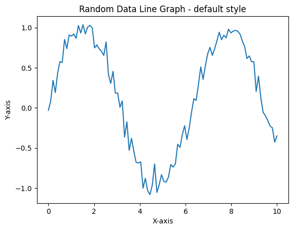

Web sites, publications and news sources all have their own styles. Take a look at the financial data published by, say, the BBC or The NewYork Times. Or polling data on Nate Silver’s FiveThirtyEight web site. They each have a clear and consistent look.
We are going to look at how we can achieve something similar with our Pandas charts and plots. First, by using the built-in styles that are available to us and then by looking at how we can create our own customizations.
The default style renders a line graph like the image, below. It’s a clean-looking image but there are several more built-in styles if you prefer something different.

The styles available a stored in a list in the Mathplotlib library. First, we need to import the library and, we’ll import numpy at the same time as we will use this shortly.
import matplotlib.pyplot as plt
import numpy as npThe styles are in plt.style.available - the code below
prints a neat list of the styles.
styles = plt.style.available
for style in styles:
print(style)Solarize_Light2
_classic_test_patch
_mpl-gallery
_mpl-gallery-nogrid
bmh
classic
dark_background
fast
fivethirtyeight
ggplot
grayscale
petroff10
seaborn-v0_8
seaborn-v0_8-bright
seaborn-v0_8-colorblind
seaborn-v0_8-dark
seaborn-v0_8-dark-palette
seaborn-v0_8-darkgrid
seaborn-v0_8-deep
seaborn-v0_8-muted
seaborn-v0_8-notebook
seaborn-v0_8-paper
seaborn-v0_8-pastel
seaborn-v0_8-poster
seaborn-v0_8-talk
seaborn-v0_8-ticks
seaborn-v0_8-white
seaborn-v0_8-whitegrid
tableau-colorblind10Above is the list from my installation which is the version 3.10.0 of Matplotlib.
Many of the styles have been created for the plotting package Seaborn but you can use them with any plotting library that is based on mathplotlib.
Other styles are emulations of other plotting systems or web sites. The ggplot style is based on the the ggplot2 library that is commonly used in the R language.
Below there is a function that can be used to explore the different styles. It is a function that generates some pseudo-random data and then plots a line graph in Matplotlib. We can pass a style as a parameter to it.
Two Numpy sequences are created for the two axes x and
y. x is created using
np.linspace(0, 10, 100), which generates 100 evenly spaced
values between 0 and 10. y is created by taking the sine of
x values and adding some random noise to it using
np.random.normal(0, 0.1, 100), which generates 100 random
values from a normal distribution with a mean of 0 and a standard
deviation of 0.1.
The result example use shows a plot with the
seaborn-v0_8 style.
Here what the ggplot style looks like.
plot_with_style('ggplot')import matplotlib
matplotlib.__version__'3.10.0'